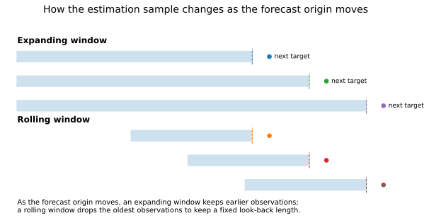
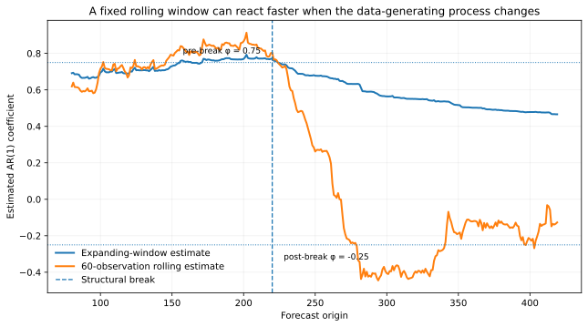

Rolling vs Expanding Windows
How much history should a forecasting model carry forward?
QM002 · Forecast Evaluation · Foundation
Core idea. An expanding window keeps all admissible past observations, while a rolling window keeps only the most recent fixed-length block.
Use it for. Deciding how the estimation sample should evolve as forecast origins move forward.
It does not establish. That one window scheme is universally better, or that a window length chosen after inspecting test performance is an untouched design choice.
The Question
In repeated forecasting, the information available to the model grows over time. A forecaster must decide what to do with older observations.
Should each new forecast use all available history, or only a recent fixed-length window?
Both choices can be valid. They answer the same forecasting problem with different assumptions about how useful older data remain. The choice matters because it changes the observations used to estimate the model at every forecast origin (Tashman 2000).
Why It Matters
An expanding window gains observations as time passes. If the underlying relationship is reasonably stable, the additional history can improve estimation precision and reduce sensitivity to a short recent sample.
A rolling window deliberately discards older observations. That can be useful when older regimes are less representative of the current forecasting environment, but it also means estimating the model from fewer observations.
This creates a basic trade-off:
- more history can reduce estimation noise;
- more recent history can place greater weight on the current regime.
Neither side dominates in every setting. Under structural change, the useful amount of pre-break information can depend on the size of the break, the amount of post-break data, the model, and the forecasting objective (Pesaran and Timmermann 2007). Window size itself can also become a source of specification search if many alternatives are tried and only the best test result is reported (Rossi and Inoue 2012).
Intuition: What Changes at Each Forecast Origin?

Suppose forecasts are made repeatedly at origins \(t=1,2,\ldots\). Let \(w\) be a fixed rolling-window length.
An expanding window uses all observations that are admissible by origin \(t\):
\[ \mathcal{E}_t=\{1,\ldots,t\}. \]
A rolling window uses only the most recent \(w\) observations:
\[ \mathcal{R}_t(w)=\{t-w+1,\ldots,t\}. \]
The exact indexing changes with the model and forecast horizon, but the distinction is simple: the expanding sample grows; the rolling sample keeps a fixed look-back length.
Rolling forecast origins describe when forecasts are generated.
Rolling estimation windows describe which historical observations are used to estimate the model at each origin.
A repeated-origin evaluation can use either an expanding estimation window or a fixed-length rolling estimation window.
The Two Schemes
Expanding window
At each new origin, add newly available observations and keep the earlier ones.
This approach is attractive when:
- parameter stability is a reasonable approximation;
- the model needs a relatively large sample;
- estimation variance is a major concern; or
- there is no strong reason to treat older observations as obsolete.
The cost is that observations from old regimes continue to influence current parameter estimates.
Rolling window
At each new origin, add recent observations and drop the oldest ones so the estimation sample remains approximately fixed in length.
This approach can react more quickly when the data-generating process changes because old regimes eventually leave the estimation sample. The cost is that a shorter sample can make parameter estimates noisier, especially when the model is complex or the signal is weak.
A rolling window therefore introduces an additional design parameter: the window length \(w\). A very short window adapts quickly but may be unstable. A very long rolling window increasingly resembles an expanding window over the available sample.
Window Choice Is Part of the Forecasting Procedure
The window rule should be treated like any other model-selection decision.
If a researcher compares 24-, 36-, 60-, 120-, and 240-month windows on the final test sample and reports only the best one, the final test sample has influenced model development. The issue is not that multiple window lengths are illegitimate; the issue is where the choice was made.
Possible clean approaches include:
- specifying the window length before the final test;
- choosing it within development or validation data;
- nesting window selection inside each forecast origin; or
- explicitly treating the final comparison across window sizes as exploratory rather than untouched confirmatory evidence.
Rossi and Inoue emphasize that forecast conclusions and tests can be sensitive to estimation-window choice, which is one reason to avoid treating the chosen window as an innocuous implementation detail (Rossi and Inoue 2012).
Worked Illustration
The example is synthetic and deterministic. It is designed to show the bias–adaptation trade-off after a structural change. It does not imply that rolling windows usually outperform expanding windows in financial or macroeconomic data.
We simulate an AR(1) process whose autoregressive coefficient changes once:
\[ y_t=\phi_t y_{t-1}+\varepsilon_t, \]
with \(\phi_t=0.75\) before the break and \(\phi_t=-0.25\) afterward.
At every forecast origin, both procedures estimate the same AR(1) model with an intercept. The only difference is the estimation sample:
- Expanding: all admissible observations available by the origin.
- Rolling: the most recent 60 estimation pairs.

Immediately before the break, the estimated AR coefficient is about 0.77 with the expanding window and 0.80 with the rolling window. Sixty forecast origins after the break, the rolling estimate has moved to about -0.34, close to the new coefficient of -0.25, while the expanding estimate remains positive at about 0.63.
The forecasting comparison is:
| Evaluation period | Forecasts | Expanding RMSE | Rolling RMSE | Rolling vs. expanding |
|---|---|---|---|---|
| Stable pre-break period | 100 | 1.056 | 1.059 | +0.3% |
| First 60 post-break forecasts | 60 | 1.604 | 1.456 | -9.2% |
| All post-break forecasts | 200 | 1.403 | 1.179 | -16.0% |
Before the break, the two schemes perform almost identically in this draw. After the break, the 60-observation rolling window adapts faster and produces lower RMSE. That result is a property of this controlled example, not a general ranking of window schemes.
Hands-on Lab: Change the Look-back Length
The optional lab reproduces the baseline illustration and then lets you change the rolling-window length.
A useful sequence is:
- reproduce the 60-observation baseline;
- try a shorter window such as 30 observations;
- try a longer window such as 120 observations; and
- compare both parameter adaptation and forecast RMSE after the break.
Run it yourself. Start with the lab guide. For a self-contained copy, use the complete lab bundle. Direct source: Python · R.
Do not expect forecast accuracy to improve monotonically as the window gets shorter or longer. The exercise is intended to show that window length changes the balance between recent-regime adaptation and estimation noise.
Implementation Pattern
A repeated-origin forecasting loop can make the distinction explicit:
for origin in forecast_origins:
expanding_train = data_available_by(origin)
rolling_train = expanding_train.tail(window_length)
model_expanding = fit_model(expanding_train)
model_rolling = fit_model(rolling_train)
forecast_expanding = model_expanding.predict(features_at(origin))
forecast_rolling = model_rolling.predict(features_at(origin))The code is schematic. In a real implementation, the sample boundaries must respect the forecast horizon, release timing, lag construction, and any data-dependent preprocessing described in QM001 — Out-of-Sample Forecast Evaluation.
How to Interpret the Result
A rolling window beating an expanding window in one evaluation period means that, under that specific model, horizon, loss function, and window length, restricting estimation to recent observations produced lower historical forecast loss.
It does not establish that:
- the same rolling length will remain optimal;
- older data are generally useless;
- a structural break has been statistically identified;
- the result is robust to other window lengths; or
- the observed loss difference is statistically distinguishable from zero.
Likewise, an expanding window winning does not prove parameter stability. It may simply mean that the extra data improved estimation enough to outweigh any cost from older observations.
Common Mistakes
1. Calling repeated forecast origins a rolling window
Forecast origins can roll forward while the estimation sample expands. State both the origin scheme and the estimation-window scheme.
2. Choosing the window on the final test sample
If final test outcomes determine the window length, they have become part of model development. Report that selection honestly or use a separate untouched evaluation.
3. Assuming shorter is always more adaptive and therefore better
A short window forgets old regimes faster, but it also throws away observations. Adaptation and estimation precision move in opposite directions.
4. Treating a fixed calendar length as a fixed information amount
Sixty monthly observations, sixty trading days, and sixty quarterly observations represent very different amounts of information. Missing values and changing data availability can further alter the effective estimation sample.
5. Changing the window without changing dependent preprocessing
If scaling, PCA, feature selection, imputation, or tuning is re-estimated at each origin, those steps must use the same admissible sample logic as the forecasting model.
6. Reporting one convenient window as if it were inevitable
Window size is often substantively important. If conclusions change across reasonable choices, that sensitivity is part of the result rather than a nuisance to hide.
When Not to Frame the Problem as Rolling vs Expanding
The binary comparison can be too narrow when the application calls for:
- explicit structural-break models;
- time-varying-parameter or state-space models;
- observation weighting or forgetting factors rather than hard inclusion/exclusion;
- adaptive window selection; or
- forecast combinations across several estimation windows.
These approaches can represent gradual change or uncertainty about the relevant historical span more flexibly than one fixed rolling length.
Practical Checklist
Before using a rolling or expanding scheme, verify that:
- the forecast-origin protocol is defined separately from the estimation-window rule;
- the minimum estimation sample is large enough for the model being fitted;
- the rolling-window length is stated in the same units as the data frequency;
- preprocessing and tuning use the same admissible sample boundaries;
- any data-driven window selection occurs inside the permitted development process;
- competing schemes are scored on the same forecast origins and targets; and
- claims about breaks, significance, or robustness are supported by evidence beyond one window comparison.
Used in SlackQuant Research
Beyond Average Accuracy: Statistical Distinguishability and Temporal Concentration in Data-Rich Macroeconomic Forecasting uses a fixed-length rolling estimation window inside a repeated pseudo-out-of-sample forecasting design. QM002 explains the estimation-window choice itself; the research paper contains the application-specific model set, horizons, benchmarks, and statistical evidence.
Reproducibility
The accompanying materials include the synthetic series, forecasting code, figures, and a hands-on lab in Python and R. Using the stated window rules reproduces the coefficient paths and forecast comparisons shown above.